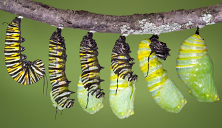

PUPA
In the 3rd stage,otherwise called the pupa stage, is
where the caterpillar becomes a chrysalis. Within the chrysalis the old
body parts of the caterpillar goes through a mindblowing change,
called "metamorphosis" to become a beautiful butterfly.
Learn More